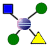

Die Relations-Applikation ist ein Werkzeug für das Wissensmanagement. Sie ist eine Kombination aus einem persönlichen Wiki und einem elektronischen Zettelkasten.
Sie können ganz einfach Einträge von drei Typen (Begriffe, Texte und Personen) erfassen und mit bereits vorhandenen Einträgen in Beziehung setzen. So entsteht ein reicher Kontext für Ihre Einträge.
Neu bei Relations? Die Hilfe erklärt, wie Sie Einträge erfassen, wie Sie diese miteinander in Beziehung setzen und wie Sie sich im Kontext eines Eintrags bewegen.
Erfahren Sie mehr über die wichtigsten Neuerungen dieser Version.
Um mit Relations zu arbeiten, schliessen Sie diese Willkommens-Seite. Sie können sie jederzeit über Hilfe > Willkommen wieder öffnen.